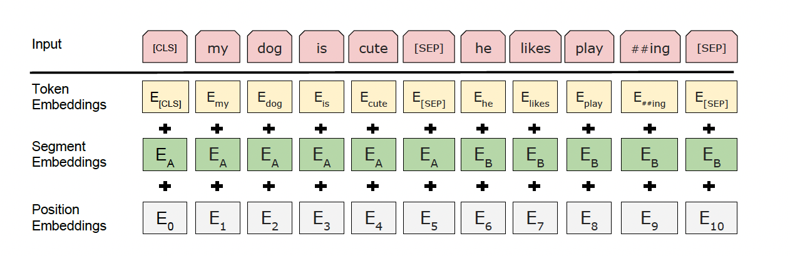
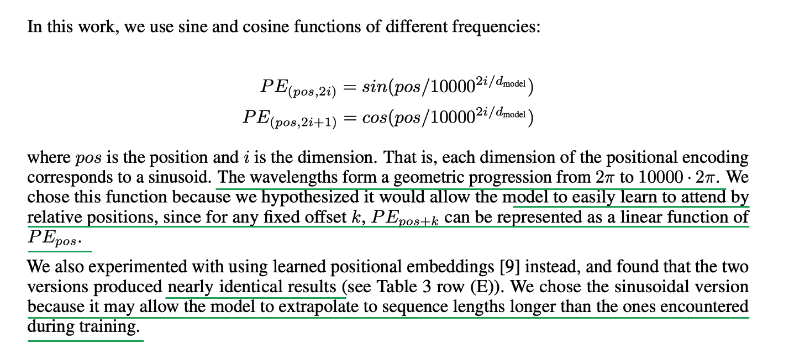
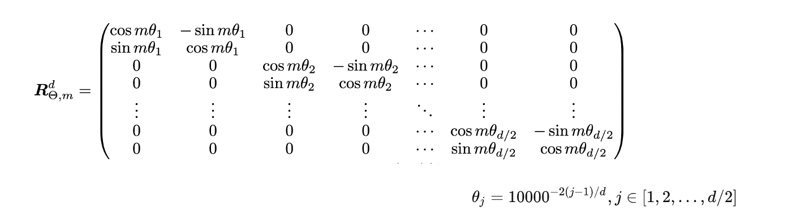
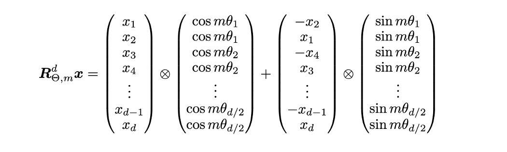
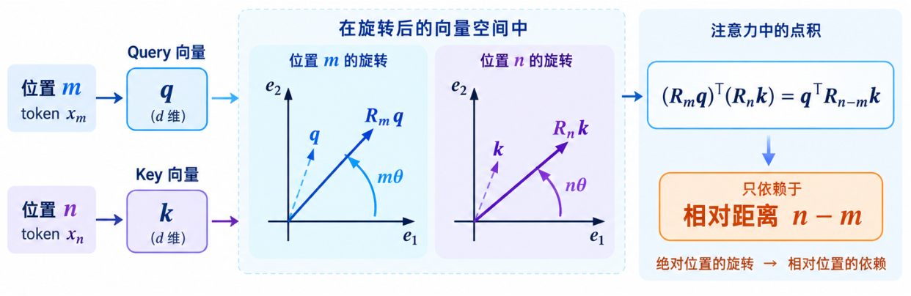
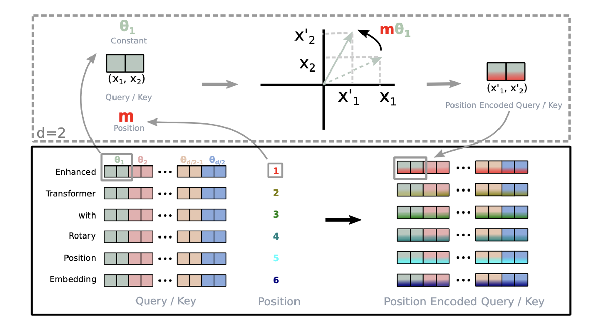
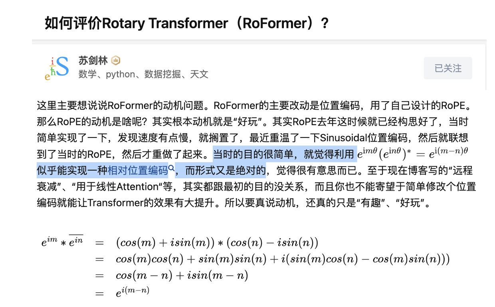
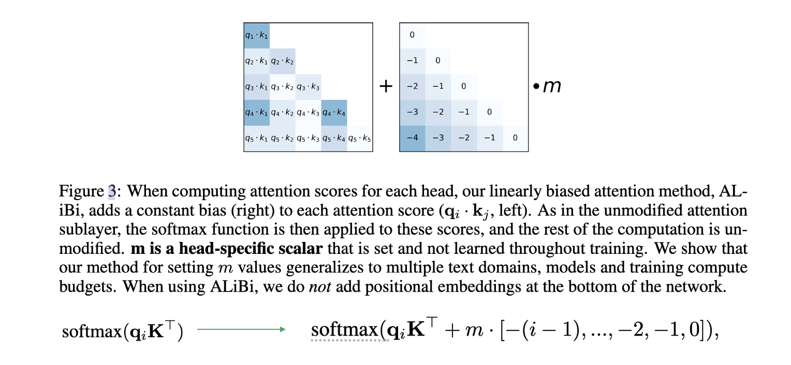
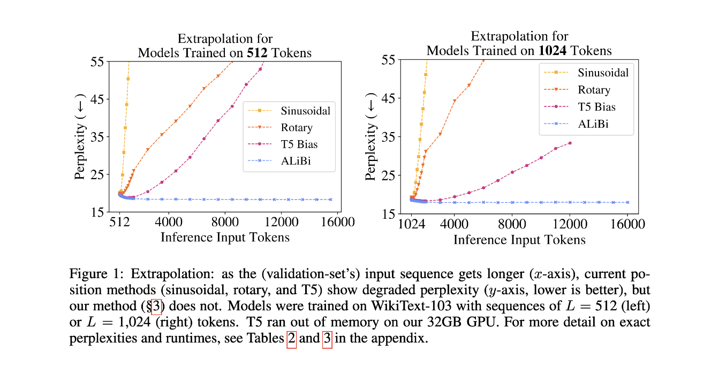

Position Embedding
Transformer架构中采用Attention机制，但Attention对序列建模时没有位置信息，因此引入了Position Embedding（Attention is all you need），本文对常用的PE类型进行介绍，常用的PE类型如下表所示。
| 编码类型 | 经典模型 |
|---|---|
| Learned Positional Embedding | BERT, Roberta, GPT, GPT2 |
| Sinusoidal | Transformer, Transformer XL |
| RoPE | RoFormer, GPT-Neo, LLaMA, ChatGLM, Baichuan7B |
| ALiBi | BLOOM, BloombergGPT, Baichuan13B |
Learned Position Embedding
通过可学习的Positional Embedding来编码位置信息，是预训练语言模型中最广泛的编码方式。这种方案直接对不同的位置随机初始化一个position embedding，然后与word embedding相加后输入模型。position embedding作为模型参数的一部分，在训练过程中进行更新。

# 初始化
self.position_embeddings = nn.Embedding(config.max_position_embeddings, config.hidden_size)
# 计算
position_embeddings = self.position_embeddings(position_ids)
embeddings += position_embeddings
Sinusoidal位置编码
基于Sinusoidal的位置编码是最初Tranformer文章(Attention is All You Need)中的方案。具体计算方式如下图所示，通过sin和cos函数直接给出了每个位置每个维度上的绝对数值，可以认为直接初始化并固定了position embedding。

代码实现如下：
class SinusoidalPositionEncoding(torch.nn.Module):
def __init__(self, dim, max_period=10000):
assert dim % 2 == 0
self.dim = dim
self.max_period = max_period
super().__init__()
w_arr = torch.arange(0, self.dim // 2)
w_arr = 1 / (max_period) ** (w_arr * 2 / dim)
self.register_buffer("w_arr", w_arr)
def forward(self, x):
"""
assume x has shape (B,T) where B=batch size, T=token size
(or sequence length) and values of x are integers >=0.
"""
_x = torch.unsqueeze(x, -1) # (B,T,1)
v = _x * self.w_arr # (B,T,dim//2)
sin = torch.sin(v)
sin = torch.unsqueeze(sin, -1) # (B,T,m,1)
cos = torch.cos(v)
cos = torch.unsqueeze(cos, -1) # (B,T,m,1)
m = torch.cat([sin, cos], -1) # (B,T,m,2)
b, t, _, _ = m.shape
y = m.reshape(b, t, -1) # (B,T,dim) where 2m=`dim`
return y
与Learned Position Embedding式对比
最初的Transformer中采用的是Sinusoidal编码，但是BERT以及后续的预训练模型都采用Position Embedding。对比分析可能有下面一些原因：
- 实现上Position Embedding相对更简单
- BERT是在更大规模的数据上训练，数据量是Transformer的40倍。在更多数据上的效果可能就不一样。
- Transformer中是机器翻译的任务，这时候encoder的核心是提取整个句子的语义，不需要特别关注词的具体位置。但是BERT这样的NLU模型是需要的，尤其对于下游的序列标注等任务，需要对位置进行更精细的建模。这时候完全训练获得的embedding要比直接赋值更好。
RoPE
RoPE旋转式位置编码是苏建林在Roformer中提出的position embedding方法，目前广泛应用于大模型模型架构中。该PE方式不是在输入层中进行应用，而是作用于Attention中的Q和K的计算中。
位置m的位置权重 𝑅𝑚 是一个二维的矩阵，具体如下所示:

与位置m的词向量x相乘就是对x注入了位置信息，因为 𝑅𝑚 的矩阵性质，相乘操作可以转换成两个相加的操作:

如果按照维度两两一组拆分来看，相当于对相邻的两个维度(x1,x2)施加了一个旋转的操作，所以也称为旋转式编码：


所以 RoPE 的 self-attention 操作的流程是，对于 token 序列中的每个词嵌入向量，首先计算其对应的 query 和 key 向量，再对每个 token 位置都计算对应的旋转矩阵，接着对每个 token 位置的 query 和 key 向量的元素按照两两一组应用旋转变换，最后再计算 query 和 key 之间的内积得到 self-attention 的计算结果。

ALiBi
Attention with Linear Biases (ALiBi)[3]是一种专门提高transformer模型外推能力的编码，让模型在训练阶段的上下文不是很长，但是在预测阶段可以支持很长的上下文。具体而言，在attention计算之后，会添加一个固定的偏置项，这个偏置项是固定的不需学习的，只跟相对位置有关。如下所示:

对于attention score会根据距离添加“惩罚”，距离越大，惩罚也越大。不同的attention head施加的惩罚系数m是不同。具体而言，假设一共有n个head，系数m是一个等比数列，始于 2−8/𝑛，终于 2−8。
外推性
固定训练阶段的最大长度是512或者1024，在预测阶段，ALiBi位置编码可以保持非常稳定的外推性。如下所示:

参考资料
-
https://blog.nghuyong.top/2023/09/02/NLP/llm-position-embedding/(大模型基础组件-Position Encoding)
-
https://zhuanlan.zhihu.com/p/642884818(一文读懂LLaMA中的旋转位置编码)
-
https://www.zhihu.com/tardis/zm/art/675243992?source_id=1003(再论大模型位置编码及其外推性)